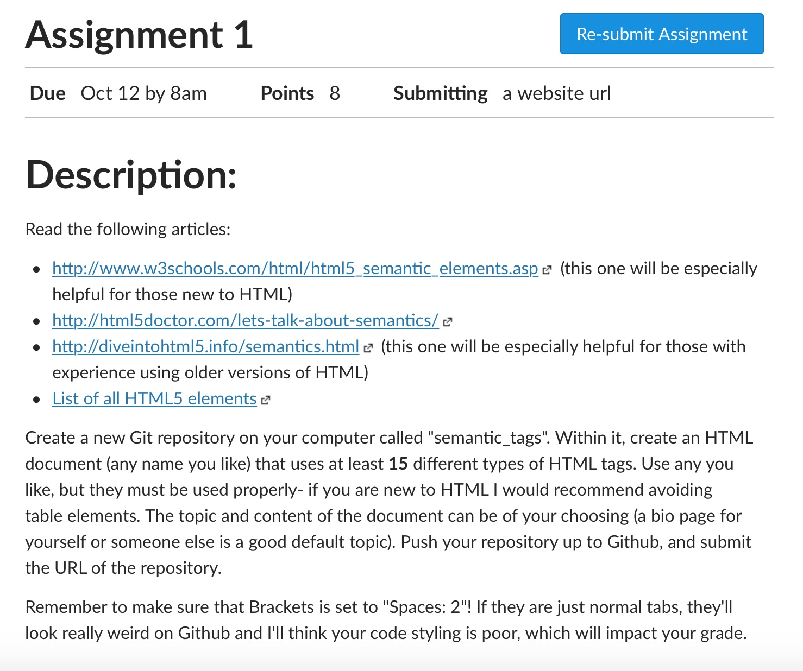
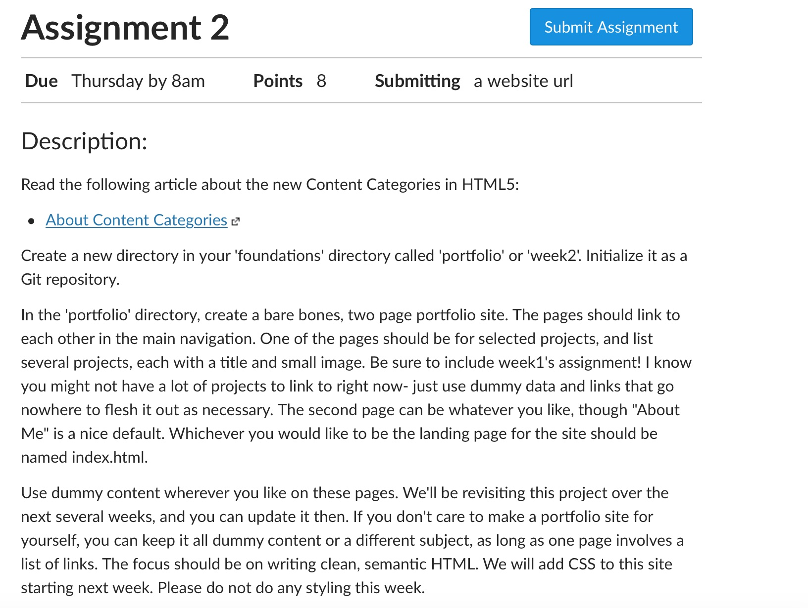
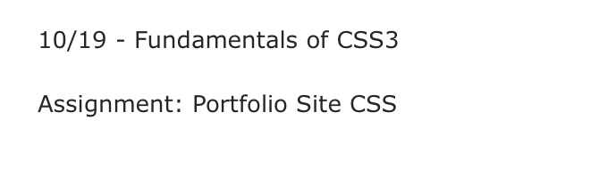
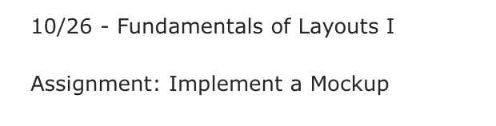
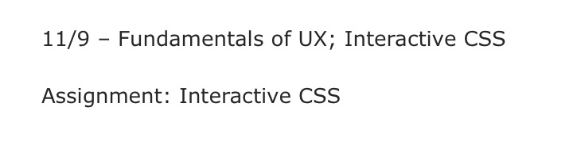
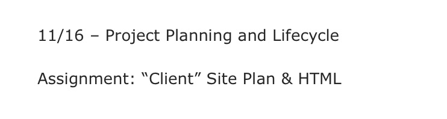
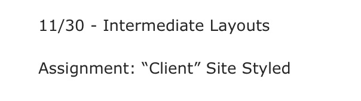
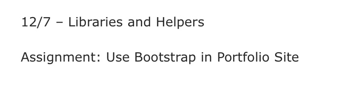

Projects
Below is a list of projects that have been completed in the field of Web Development.
-
Semantic Tags
You can access this assignment at: Assignment 1
-
Portfolio Site HTML
You can access this assignment at: Assignment 2
-
Portfolio Site CSS3
You can access this assignment at: Assignment 3
-
Implement a Mockup
You can access this assignment at: Assignment 4
-
Attractive Portfolio Site

You can access this assignment at: Assignment 5
-
Interactive CSS
You can access this assignment at: Assignment 6
-
"Client" Site Plan and HTML
You can access this assignment at: Assignment 7
-
"Client" Site Styled
You can access this assignment at: Assignment 8
-
Use Bootstrap in Portfolio Site
You can access this assignment at: Assignment 9